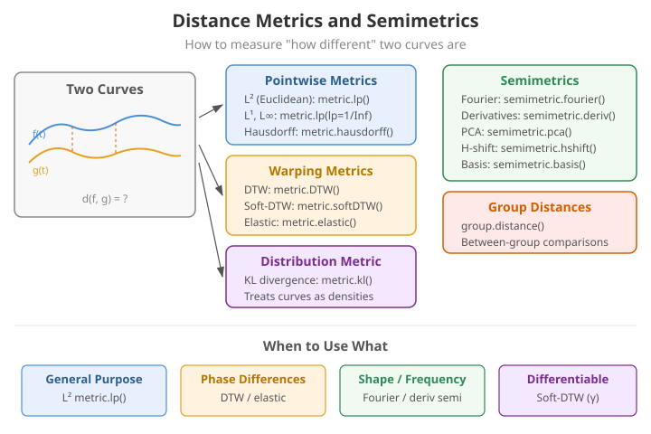
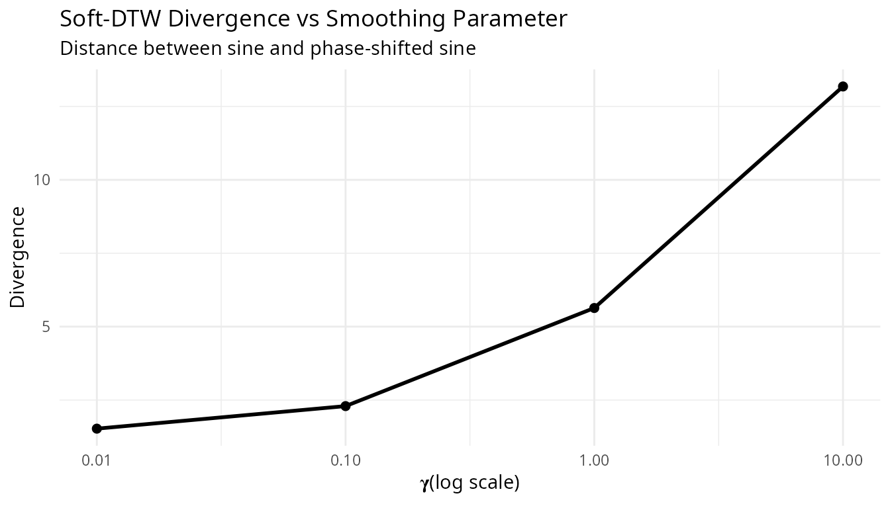
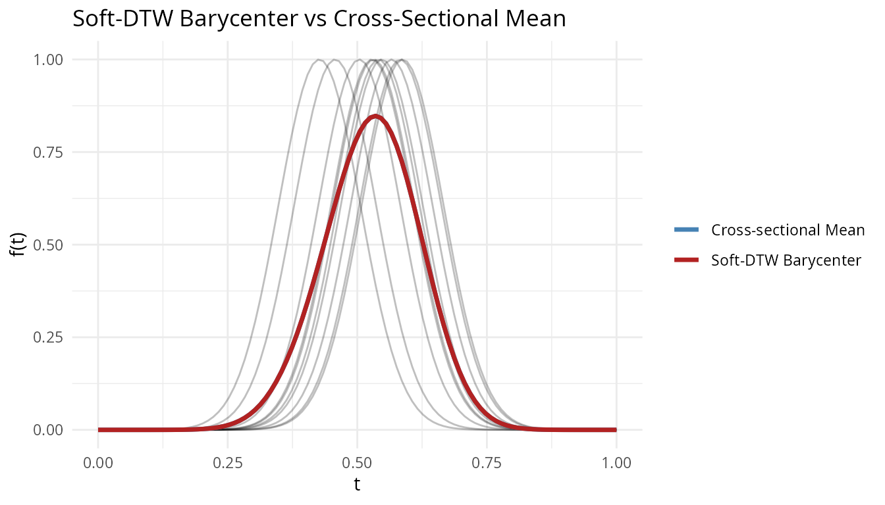
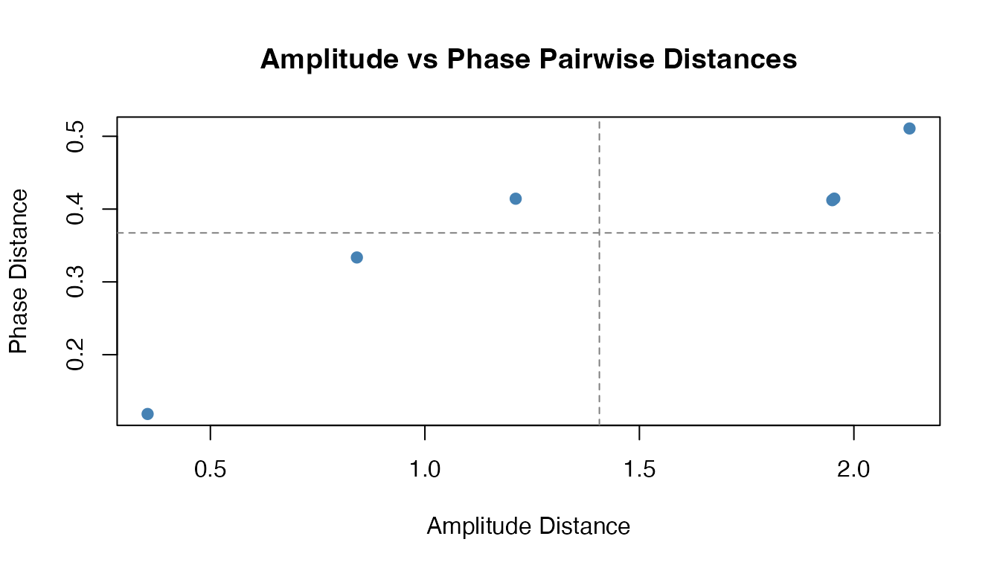
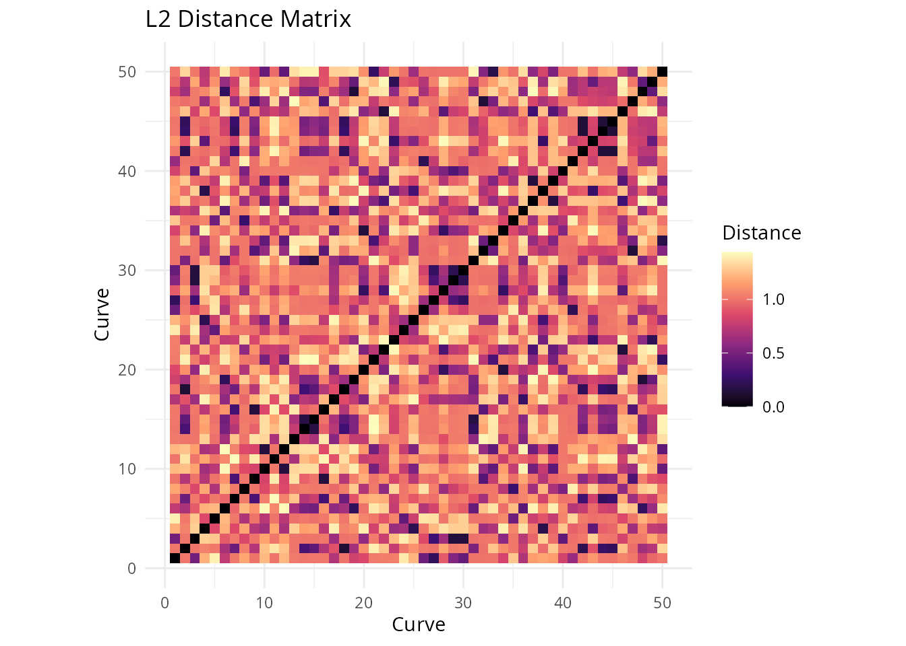

Distance Metrics and Semimetrics
Source:vignettes/articles/distance-metrics.Rmd
distance-metrics.RmdIntroduction
Distance measures are fundamental to many FDA methods including clustering, k-nearest neighbors regression, and outlier detection. fdars provides both true metrics (satisfying the triangle inequality) and semimetrics (which may not).
Choosing the right distance measure depends on what kind of “similarity” matters for your application. Some distances compare curves point-by-point (L2), others allow for timing shifts before comparing (DTW, Soft-DTW, elastic), and still others focus on specific aspects like curve shape (derivative-based) or frequency content (Fourier-based).
A metric on a space satisfies:
- (non-negativity)
- (identity of indiscernibles)
- (symmetry)
- (triangle inequality)
A semimetric satisfies only conditions 1-3.

True Metrics
Lp Distance (metric.lp)
The distance is the most common choice for functional data. It computes the integrated norm of the difference between two functions:
For discrete observations, this is approximated using numerical integration (Simpson’s rule):
where are quadrature weights.
Special cases:
- (L2/Euclidean): Most common, corresponds to the standard functional norm. Sensitive to vertical differences.
- (L1/Manhattan): More robust to outliers than L2.
- (L-infinity/Chebyshev): Maximum absolute difference, .
# L2 (Euclidean) distance - default
dist_l2 <- metric.lp(fd)
print(round(as.matrix(dist_l2), 3))
#> curve1 curve2 curve3 curve4
#> curve1 0.00 0.350 1.000 1
#> curve2 0.35 0.000 0.722 1
#> curve3 1.00 0.722 0.000 1
#> curve4 1.00 1.000 1.000 0
# L1 (Manhattan) distance
dist_l1 <- metric.lp(fd, lp = 1)
# L-infinity (maximum) distance
dist_linf <- metric.lp(fd, lp = Inf)Weighted Lp Distance
Apply different weights to different parts of the domain:
This is useful when certain parts of the domain are more important than others.
Hausdorff Distance (metric.hausdorff)
The Hausdorff distance treats curves as sets of points in 2D space and computes the maximum of minimum distances:
where is the point on the graph of at time .
The Hausdorff distance is useful when:
- Curves may cross each other
- The timing of features is less important than their shape
- Comparing curves with different supports
dist_haus <- metric.hausdorff(fd)
print(round(as.matrix(dist_haus), 3))
#> curve1 curve2 curve3 curve4
#> curve1 0.000 0.479 0.678 0.328
#> curve2 0.479 0.000 0.521 0.416
#> curve3 0.678 0.521 0.000 0.352
#> curve4 0.328 0.416 0.352 0.000Dynamic Time Warping (metric.DTW)
DTW allows for non-linear alignment of curves before computing the distance. It finds the optimal warping path that minimizes:
subject to boundary conditions, monotonicity, and continuity constraints.
The Sakoe-Chiba band constraint limits the warping to , preventing excessive distortion:
DTW is particularly effective for:
- Phase-shifted signals
- Time series with varying speed
- Comparing signals with local time distortions
dist_dtw <- metric.DTW(fd)
print(round(as.matrix(dist_dtw), 3))
#> curve1 curve2 curve3 curve4
#> curve1 0.000 1.452 18.185 24.844
#> curve2 1.452 0.000 3.488 25.980
#> curve3 18.185 3.488 0.000 40.825
#> curve4 24.844 25.980 40.825 0.000Notice that DTW gives a smaller distance between the original sine and phase-shifted sine compared to L2, because it can align them:
# Compare L2 vs DTW for phase-shifted curves
cat("L2 distance (sine vs phase-shifted):", round(as.matrix(dist_l2)[1, 2], 3), "\n")
#> L2 distance (sine vs phase-shifted): 0.35
cat("DTW distance (sine vs phase-shifted):", round(as.matrix(dist_dtw)[1, 2], 3), "\n")
#> DTW distance (sine vs phase-shifted): 1.452DTW with band constraint:
# Restrict warping to 10% of the series length
dist_dtw_band <- metric.DTW(fd, w = round(m * 0.1))Soft-DTW (metric.softDTW)
Soft-DTW (Cuturi & Blondel, 2017) is a differentiable relaxation of DTW that replaces the hard minimum with a soft minimum controlled by a smoothing parameter :
where is the log-sum-exp soft minimum: .
As , Soft-DTW converges to standard DTW. As , all warping paths receive equal weight. Soft-DTW is not a metric – it can assign negative values to self-distances. The Soft-DTW divergence corrects this:
The divergence is non-negative, zero iff , and symmetric.
# Soft-DTW distance matrix (raw)
dist_sdtw <- metric.softDTW(fd, gamma = 1.0)
cat("Soft-DTW distance matrix:\n")
#> Soft-DTW distance matrix:
print(round(as.matrix(dist_sdtw), 3))
#> curve1 curve2 curve3 curve4
#> curve1 -168.624 -162.953 -126.778 -104.031
#> curve2 -162.953 -168.552 -152.837 -103.278
#> curve3 -126.778 -152.837 -168.248 -80.142
#> curve4 -104.031 -103.278 -80.142 -164.320
# Soft-DTW divergence (non-negative, symmetric)
dist_sdtw_div <- metric.softDTW(fd, gamma = 1.0, divergence = TRUE)
cat("\nSoft-DTW divergence matrix:\n")
#>
#> Soft-DTW divergence matrix:
print(round(as.matrix(dist_sdtw_div), 3))
#> curve1 curve2 curve3 curve4
#> curve1 0.000 5.635 41.658 62.441
#> curve2 5.635 0.000 15.562 63.158
#> curve3 41.658 15.562 0.000 86.142
#> curve4 62.441 63.158 86.142 0.000Effect of the Smoothing Parameter
Small approximates hard DTW (sharper, less smooth gradients); large averages over more warping paths (smoother, less discriminative):
gammas <- c(0.01, 0.1, 1.0, 10.0)
sdtw_12 <- sapply(gammas, function(g) {
as.matrix(metric.softDTW(fd, gamma = g, divergence = TRUE))[1, 2]
})
df_gamma <- data.frame(gamma = gammas, divergence = sdtw_12)
ggplot(df_gamma, aes(x = gamma, y = divergence)) +
geom_line(linewidth = 1) +
geom_point(size = 2) +
scale_x_log10() +
labs(title = "Soft-DTW Divergence vs Smoothing Parameter",
subtitle = "Distance between sine and phase-shifted sine",
x = expression(gamma ~ "(log scale)"), y = "Divergence")
Soft-DTW Barycenter
Soft-DTW provides a differentiable loss, making it suitable for computing barycenters (weighted averages under DTW alignment) via gradient descent:
# Create shifted bumps for barycenter computation
set.seed(42)
n_bary <- 10
X_bary <- matrix(0, n_bary, m)
for (i in 1:n_bary) {
shift <- runif(1, -0.1, 0.1)
X_bary[i, ] <- exp(-80 * (t_grid - 0.5 - shift)^2)
}
fd_bary <- fdata(X_bary, argvals = t_grid)
bc <- softdtw.barycenter(fd_bary, gamma = 1.0)
cross_mean <- colMeans(fd_bary$data)
df_bc <- data.frame(
t = rep(t_grid, 2),
value = c(as.numeric(bc$barycenter$data), cross_mean),
type = rep(c("Soft-DTW Barycenter", "Cross-sectional Mean"), each = m)
)
ggplot() +
geom_line(data = data.frame(
t = rep(t_grid, n_bary),
value = as.vector(t(fd_bary$data)),
curve = rep(1:n_bary, each = m)
), aes(x = t, y = value, group = curve), alpha = 0.25) +
geom_line(data = df_bc, aes(x = t, y = value, color = type), linewidth = 1.2) +
scale_color_manual(values = c("Cross-sectional Mean" = "steelblue",
"Soft-DTW Barycenter" = "firebrick")) +
labs(title = "Soft-DTW Barycenter vs Cross-Sectional Mean",
x = "t", y = "f(t)", color = NULL)
The cross-sectional mean is attenuated by the phase shifts; the Soft-DTW barycenter recovers the peak shape by accounting for alignment.
Kullback-Leibler Divergence (metric.kl)
The symmetric Kullback-Leibler divergence treats normalized curves as probability density functions:
Before computing, curves are shifted to be non-negative and normalized to integrate to 1:
This metric is useful for:
- Comparing density-like functions
- Distribution comparison
- Information-theoretic analysis
# Shift curves to be positive for KL
X_pos <- X - min(X) + 0.1
fd_pos <- fdata(X_pos, argvals = t_grid)
dist_kl <- metric.kl(fd_pos)
print(round(as.matrix(dist_kl), 3))
#> curve1 curve2 curve3 curve4
#> curve1 0.000 0.139 1.208 1.187
#> curve2 0.139 0.000 0.630 1.426
#> curve3 1.208 0.630 0.000 1.156
#> curve4 1.187 1.426 1.156 0.000Semimetrics
Semimetrics may not satisfy the triangle inequality but can be more appropriate for certain applications or provide computational advantages.
PCA-Based Semimetric (semimetric.pca)
Projects curves onto the first principal components and computes the Euclidean distance in the reduced space:
where is the -th principal component score of , and are the eigenfunctions from functional PCA.
This semimetric is useful for:
- Dimension reduction before distance computation
- Noise reduction (low-rank approximation)
- Computational efficiency with many evaluation points
# Distance using first 3 PCs
dist_pca <- semimetric.pca(fd, ncomp = 3)
print(round(as.matrix(dist_pca), 3))
#> [,1] [,2] [,3] [,4]
#> [1,] 0.000 3.514 10.000 9.950
#> [2,] 3.514 0.000 7.198 9.961
#> [3,] 10.000 7.198 0.000 10.000
#> [4,] 9.950 9.961 10.000 0.000Derivative-Based Semimetric (semimetric.deriv)
Computes the distance based on the -th derivative of the curves:
where denotes the -th derivative of .
This semimetric focuses on the shape and dynamics of curves rather than their absolute values. It is particularly useful when:
- Comparing rate of change (first derivative)
- Analyzing curvature (second derivative)
- Functions are measured with different baselines
# First derivative (velocity)
dist_deriv1 <- semimetric.deriv(fd, nderiv = 1)
# Second derivative (acceleration/curvature)
dist_deriv2 <- semimetric.deriv(fd, nderiv = 2)
cat("First derivative distances:\n")
#> First derivative distances:
print(round(as.matrix(dist_deriv1), 3))
#> [,1] [,2] [,3] [,4]
#> [1,] 0.000 2.197 6.279 9.912
#> [2,] 2.197 0.000 4.530 9.912
#> [3,] 6.279 4.530 0.000 9.912
#> [4,] 9.912 9.912 9.912 0.000Basis Semimetric (semimetric.basis)
Projects curves onto a basis (B-spline or Fourier) and computes the Euclidean distance between the coefficient vectors:
where are the basis coefficients from .
For B-splines: Local support provides good approximation of local features.
For Fourier basis: Global support captures periodic patterns efficiently.
# B-spline basis (local features)
dist_bspline <- semimetric.basis(fd, nbasis = 15, basis = "bspline")
# Fourier basis (periodic patterns)
dist_fourier <- semimetric.basis(fd, nbasis = 11, basis = "fourier")
cat("B-spline basis distances:\n")
#> B-spline basis distances:
print(round(as.matrix(dist_bspline), 3))
#> [,1] [,2] [,3] [,4]
#> [1,] 0.000 1.509 4.015 3.913
#> [2,] 1.509 0.000 2.771 3.999
#> [3,] 4.015 2.771 0.000 4.289
#> [4,] 3.913 3.999 4.289 0.000Fourier Semimetric (semimetric.fourier)
Uses the Fast Fourier Transform (FFT) to compute Fourier coefficients and measures distance based on the first frequency components:
where is the -th Fourier coefficient computed via FFT.
This is computationally efficient for large datasets and particularly useful for periodic or frequency-domain analysis.
dist_fft <- semimetric.fourier(fd, nfreq = 5)
cat("Fourier (FFT) distances:\n")
#> Fourier (FFT) distances:
print(round(as.matrix(dist_fft), 3))
#> curve1 curve2 curve3 curve4
#> curve1 0.000 0.005 0.012 0.694
#> curve2 0.005 0.000 0.008 0.695
#> curve3 0.012 0.008 0.000 0.700
#> curve4 0.694 0.695 0.700 0.000Horizontal Shift Semimetric (semimetric.hshift)
Finds the optimal horizontal shift before computing the distance:
where is the shift in discrete time units and is the maximum allowed shift.
This semimetric is simpler than DTW (only horizontal shifts, no warping) but can be very effective for:
- Phase-shifted periodic signals
- ECG or other physiological signals with timing variations
- Comparing curves where horizontal alignment is meaningful
dist_hshift <- semimetric.hshift(fd)
cat("Horizontal shift distances:\n")
#> Horizontal shift distances:
print(round(as.matrix(dist_hshift), 3))
#> curve1 curve2 curve3 curve4
#> curve1 0.000 0.005 0.010 0.733
#> curve2 0.005 0.000 0.005 0.629
#> curve3 0.010 0.005 0.000 0.718
#> curve4 0.733 0.629 0.718 0.000Elastic Distances
Elastic alignment provides a family of distances based on the
Fisher-Rao metric and the SRSF transform. These distances decompose
curve differences into amplitude (shape) and phase (timing) components.
See vignette("elastic-alignment", package = "fdars") for
the full framework.
Elastic Distance (metric.elastic / elastic.distance)
The elastic distance computes the distance between optimally aligned SRSFs:
where are the SRSFs of and is the warping group. This is a proper metric that is invariant to reparameterization.
dist_elastic <- elastic.distance(fd)
cat("Elastic distance matrix:\n")
#> Elastic distance matrix:
print(round(dist_elastic, 3))
#> [,1] [,2] [,3] [,4]
#> [1,] 0.000 0.354 1.212 1.927
#> [2,] 0.354 0.000 0.841 1.975
#> [3,] 1.212 0.841 0.000 2.120
#> [4,] 1.927 1.975 2.120 0.000Amplitude Distance (amplitude.distance)
The amplitude distance measures the shape difference between curves after optimal alignment – it captures how much the curves differ in height, depth, and feature magnitude:
where controls the penalty on warping complexity.
dist_amp <- amplitude.distance(fd, lambda = 0)
cat("Amplitude distance matrix:\n")
#> Amplitude distance matrix:
print(round(as.matrix(dist_amp), 3))
#> curve1 curve2 curve3 curve4
#> curve1 0.000 0.354 1.212 1.927
#> curve2 0.354 0.000 0.841 1.975
#> curve3 1.212 0.841 0.000 2.120
#> curve4 1.927 1.975 2.120 0.000Phase Distance (phase.distance)
The phase distance measures only the timing difference between curves – how much one curve’s time axis must be warped to match another:
This is the geodesic distance of the warping function from the identity on the warping group , which forms a Riemannian manifold.
dist_phase <- phase.distance(fd, lambda = 0)
cat("Phase distance matrix:\n")
#> Phase distance matrix:
print(round(as.matrix(dist_phase), 3))
#> curve1 curve2 curve3 curve4
#> curve1 0.000 0.119 0.420 0.416
#> curve2 0.119 0.000 0.342 0.419
#> curve3 0.420 0.342 0.000 0.529
#> curve4 0.416 0.419 0.529 0.000Comparing Amplitude and Phase Distances
The amplitude and phase distances capture orthogonal aspects of curve variability. Curves that differ mainly in timing (phase-shifted copies of the same shape) will have small amplitude distance but large phase distance:
amp_vals <- as.vector(as.matrix(dist_amp))[upper.tri(as.matrix(dist_amp))]
phase_vals <- as.vector(as.matrix(dist_phase))[upper.tri(as.matrix(dist_phase))]
df_ap <- data.frame(amplitude = amp_vals, phase = phase_vals)
ggplot(df_ap, aes(x = amplitude, y = phase)) +
geom_point(color = "steelblue", size = 1.5) +
geom_hline(yintercept = mean(phase_vals), linetype = "dashed", color = "grey50") +
geom_vline(xintercept = mean(amp_vals), linetype = "dashed", color = "grey50") +
labs(title = "Amplitude vs Phase Pairwise Distances",
x = "Amplitude Distance", y = "Phase Distance") +
theme_minimal()
Unified Interface
Use metric() for a unified interface to all distance
functions:
# Different methods via single function
d1 <- metric(fd, method = "lp", lp = 2)
d2 <- metric(fd, method = "dtw")
d3 <- metric(fd, method = "hausdorff")
d4 <- metric(fd, method = "pca", ncomp = 2)
d5 <- metric(fd, method = "softdtw", gamma = 1.0)
d6 <- metric(fd, method = "elastic")
d7 <- metric(fd, method = "amplitude")
d8 <- metric(fd, method = "phase")Comparing Distance Measures
Different distance measures capture different aspects of curve similarity:
# Create comparison data
dists <- list(
L2 = as.vector(as.matrix(dist_l2)),
L1 = as.vector(as.matrix(dist_l1)),
DTW = as.vector(as.matrix(dist_dtw)),
Hausdorff = as.vector(as.matrix(dist_haus))
)
# Correlation between distance measures
dist_mat <- do.call(cbind, dists)
cat("Correlation between distance measures:\n")
#> Correlation between distance measures:
print(round(cor(dist_mat), 2))
#> L2 L1 DTW Hausdorff
#> L2 1.00 1.00 0.82 0.74
#> L1 1.00 1.00 0.82 0.74
#> DTW 0.82 0.82 1.00 0.32
#> Hausdorff 0.74 0.74 0.32 1.00Distance Matrices for Larger Samples
# Generate larger sample
set.seed(123)
n <- 50
X_large <- matrix(0, n, m)
for (i in 1:n) {
phase <- runif(1, 0, 2*pi)
freq <- sample(1:3, 1)
X_large[i, ] <- sin(freq * pi * t_grid + phase) + rnorm(m, sd = 0.1)
}
fd_large <- fdata(X_large, argvals = t_grid)
# Compute distance matrix
dist_matrix <- metric.lp(fd_large)
# Visualize as heatmap using ggplot2
dist_df <- expand.grid(Curve1 = 1:n, Curve2 = 1:n)
dist_df$Distance <- as.vector(as.matrix(dist_matrix))
ggplot(dist_df, aes(x = Curve1, y = Curve2, fill = Distance)) +
geom_tile() +
scale_fill_viridis_c(option = "magma") +
coord_equal() +
labs(x = "Curve", y = "Curve", title = "L2 Distance Matrix") +
theme_minimal()
Metric Properties Summary
| Distance | Type | Triangle Ineq. | Phase Invariant | Computational Cost |
|---|---|---|---|---|
| Lp | Metric | Yes | No | O(nm) |
| Hausdorff | Metric | Yes | Partial | O(nm²) |
| DTW | Metric* | Yes* | Yes | O(nm²) |
| Soft-DTW | Semimetric | No | Yes | O(nm²) |
| Soft-DTW Div. | Semimetric | No*** | Yes | O(nm²) |
| Elastic | Metric | Yes | Yes | O(nm²) |
| Amplitude | Semimetric | No | Yes | O(nm²) |
| Phase | Metric | Yes | Yes | O(nm²) |
| KL | Semimetric | No | No | O(nm) |
| PCA | Semimetric | Yes** | No | O(nm + nq²) |
| Derivative | Semimetric | Yes** | No | O(nm) |
| Basis | Semimetric | Yes** | No | O(nmK) |
| Fourier | Semimetric | Yes** | No | O(nm log m) |
| H-shift | Semimetric | No | Yes | O(nm·h_max) |
* DTW satisfies triangle inequality when using the same warping path ** These satisfy triangle inequality in the reduced/transformed space *** Soft-DTW divergence is non-negative and symmetric but does not satisfy triangle inequality
Choosing a Distance Measure
| Scenario | Recommended Distance |
|---|---|
| General purpose | L2 (metric.lp) |
| Heavy-tailed noise | L1 (metric.lp, p=1) |
| Worst-case analysis | L-infinity (metric.lp, p=Inf) |
| Phase-shifted signals | DTW, H-shift, or Elastic |
| Differentiable DTW loss | Soft-DTW (metric.softDTW) |
| Reparameterization-invariant | Elastic (elastic.distance) |
| Separate shape vs timing | Amplitude + Phase distances |
| Curves that cross | Hausdorff |
| High-dimensional data | PCA-based |
| Shape comparison | Derivative-based |
| Periodic data | Fourier-based |
| Density-like curves | Kullback-Leibler |
Performance
Distance computations are parallelized in Rust:
# Benchmark for 500 curves
X_bench <- matrix(rnorm(500 * 200), 500, 200)
fd_bench <- fdata(X_bench)
system.time(metric.lp(fd_bench))
#> user system elapsed
#> 0.089 0.000 0.045
system.time(metric.DTW(fd_bench))
#> user system elapsed
#> 1.234 0.000 0.312Using Distances in Other Methods
Distance functions can be passed to clustering and regression:
# K-means with L1 distance
km_l1 <- cluster.kmeans(fd_large, ncl = 3, metric = "L1", seed = 42)
# K-means with custom metric function
km_dtw <- cluster.kmeans(fd_large, ncl = 3, metric = metric.DTW, seed = 42)
# Nonparametric regression uses distances internally
y <- rnorm(n)
fit_np <- fregre.np(fd_large, y, metric = metric.lp)See Also
-
vignette("clustering", package = "fdars")— functional data clustering -
vignette("elastic-alignment", package = "fdars")— elastic curve alignment using SRVF -
vignette("articles/scalar-on-function")— scalar-on-function regression methods
References
- Berndt, D.J. and Clifford, J. (1994). Using Dynamic Time Warping to Find Patterns in Time Series. KDD Workshop, 359-370.
- Cuturi, M. and Blondel, M. (2017). Soft-DTW: a Differentiable Loss Function for Time-Series. Proceedings of the 34th International Conference on Machine Learning, 894-903.
- Ferraty, F. and Vieu, P. (2006). Nonparametric Functional Data Analysis. Springer.
- Ramsay, J.O. and Silverman, B.W. (2005). Functional Data Analysis. Springer, 2nd edition.
- Sakoe, H. and Chiba, S. (1978). Dynamic programming algorithm optimization for spoken word recognition. IEEE Transactions on Acoustics, Speech, and Signal Processing, 26(1), 43-49.
- Srivastava, A. and Klassen, E. (2016). Functional and Shape Data Analysis. Springer.